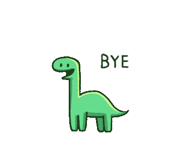

{% extends "Componentes/header.html" %}
{% load static %}
{% block links%}
{% endblock %}
{% block title %} Logout {% endblock %}
{% block css %} {% endblock %}
{% block content %}
{% if user.is_authenticated %}
{% endif %}

Te has desconectado...
{% endblock %}
{% block js%}
{% endblock %}